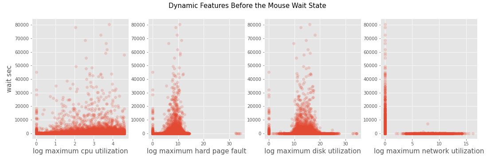

Exploratory Data Analysis
In general, mouse wait is caused by cursor that indicates that an application is busy performing an operation [1]. This means system usage is overused.Before the prediction task, we want to firstly explore what factors induce mouse wait.We will do some exploratory data analysis on both dynamic system info and static dynamic info.
Dynamic System Info
The data set we use is "mousewaitall.csv001",which is provided by the Intel teams. This dataset records system usage information before and after mouse wait happens.Each feature in this dataset consists of prefix, infix and suffix. Prefix has "before" and "after". It is represent the feature recorded before or after mouse wait event. Infix has "CPUUtil", "harddpf", "diskutil" and "networkutil". This represents what kind of system usage this feature records. Suffix has "min", "max" and "mean". This represents the way this feature computes statistics.
| Before_Cpu_Util_Max |
| Before_HardDPF_Max |
| Before_Disk_Util_Max |
| Before_Network_Util_Max |
We chose 4 Before***Max features. The reason we choose ”Before” is that our model is a predictive model, which need to finish prediction before the predictive target happens, so it is impossible to get”after” data. The reason we chose ”Max” is that mouse wait is caused by system usage overused, ”Max” best fits this situation.The first step of the exploratory data analysis is data cleaning. There is no Null value in the dataset.However, the column ”waitmsecs” contains a lot of outliers and its distribution is not normally distributed.As seen in Figure 1, we see there is several points overwhelmingly larger than others that are accumulated at less than 3000 sec. However, we decide not to remove these outliers because the long wait is crucial in our study.Considering ”before_cpuutil_max” (maximum cpu utilization before the mouse wait state) is collected in percentage, we remove rows that are larger than 100.After data cleaning, we work on data transformation.Features like ”before_hard_dpf_max” (maximum hardpage faults before the mouse wait state) have large variance. It has an exponential growth and make its data pattern of the first half not distinguishable. To solve this problem, we execute a log transformation on”, before_hard_dpf_max”,”before_cpu_util_max”,”before_disk_util_max”, ”and before_net_work_util_max”.
$$ Data_{New} = \log_{2}{Data_{Old}} $$To find potential features for the mouse wait time, we draw scatter plots in Figure 2 to see if the log-transformed ”before_hard_dpf_max”,”before_cpu_util_max”,”before_disk_util_max”,and ”before_network_util_max” have any relationship withwaitsecs. CPU utilization before the mouse wait state seems to have a slight linear correlation with mouse wait time. As ”before_cpu_util_max” gets larger, the wait time gets larger. In the second graph ”waitmsec VS hard page fault” and third graph ” waitmsec VS disk_utilization”, we can see it exists lines that separate longtime mouse wait and short time mouse wait. Long time mouse wait events cluster at hard page fault’s interval 5 - 12 and disk utilization’s interval 10 - 20. These separable lines can be used in decision tree to classify short time mouse wait event and long mouse wait event,so we should include these features into our model.Although it seems that there is also separable longtime mouse wait and short time mouse wait in fourth graph ”waitmsec VS network ultilization”, when we check the distribution of network utilization, 99.89% of network utilization are 0, which means this feature almost has just one value and so it wouldn’t be helpful for building model. Based on these scatter plots, we choose ”before_hard_dpf_max”, ”before_cpu_util_max”,”before_disk_util_max” as our dynamic system info input_features.
Figure 2. Scatter plot for CPU util, disk util, and harddpf
We then create a new column for the classification task, 0 - 5 sec, 5 - 10 sec, and 10+ sec based on mouse wait time. The distribution is plotted at Figure3. Generally, people regard waiting for the mouse less than 5 seconds as normal, 5 - 10 seconds as a little long, and over 10 seconds as a long wait. Figure 3 is the distribution of the wait time in October, 2020. 77% of the mouse wait events happened less than 5 seconds.That would cause a large bias on the first classification group, which is a problem that we would solve later.
Figure 3. Waitsecs distribution
Figure 4. Waitmsecs VS Dynamic System InfoFeatures
To see how ”before_hard_dpf_max”,”before_cpu_util_max”,”before_disk_util_max”,and ”before_network_util_max” might affect mouse wait time, we draw a plot in 3 dimensions in Figure 4 to explore further. Each axis represent one dynamic system info feature. Color of point represents its classification group. Black points represent 0 - 5 sec, red points 5 -10 sec, and yellow points 10+ sec. Also, the 3D plot is created from 12 GUIDs in order to make the shape more obvious. In observation of the plot, first of all, the data in the three groups tend to be on a similar area,but the red points cluster when ”before_hard_dpf_max” is at 6 - 10, ”before_disk_util_max” at 10 - 12.5, and ”before_cpu_util_max” at 3 - 5 (these features are log-tranformed ). We can barely see yellow points on the plot because there is relatively few mouse wait event over 10+ sec. After rotating the 3D map, we can see from a certain perspective, classification groups are separated, which means there might be separable hyperplanes in certain projection.This remindsus machine learning models that utilize separable hyperplanes, like decision tree or SVM, these will be good base model for predicting mouse wait.
Static System Info
The data set we use is ”system_sysinfo_unique_normalized.csv000”, which is provided by the Intel teams.It contain 32 different features and 100,000 unique systems.This data set provides information about the system hardware like CPU model, GPU,ram, etc. We choose 9 features from the provided information, as shown below, as they rigorously represent the configuration of each system. Among the 9 features, ”chassistype”, ”os”, ”graphicscardclass”,”cpucode” and ”persona” are nominal features,and ”ram”, ”age_category”, ”processornumber” are quantitative features as they are ordinal.
| chassistype |
| ram |
| os |
| age_category |
| processornumber |
| cpucode |
| persona |
Then, we use Chi-squared test to test if each of the nominal features are correlated with the mouse wait time. The Null hypothesis is that the observed frequencies of each categorical variables match the expected frequencies. The Chi-squared test is conducted with bootstrapping. We sample 5000 mouse wait events from the training set and compute the p-value for each categorical feature. We then repeat the process 1000times. With 1000 p-values in hand, we calculate their mean and median for each feature.In Figure 5, it turns out that only the statistics of CPU code, os and persona are less than the significance level 0.05, the null hypothesis are rejected, meaning that the features are not independent. That gives us an idea that the two categorical features do have a relationship with mouse wait time.The features are incorporated into the model later as an improvement.However, ’cpucode’, ’os’ and ’persona’ are are nominal and can’t be directly input in the model. For these nominal features, we execute a one hot transformation. One hot transformation creates a list of a list of length N, the amount of distinct values for each column. If this column has the Kth distinct value, theKth value in list will be 1 and value in other positions are 0.After One Hot transformation, the 3 nominal features are transformed into 907 quantitative features in a matrix.However, the size of the 907 features is too large to do calculations and most of the values inside the matrix are zeroes as sparse matrix. Therefore,we executed a PCA(Principle Component Analysis)transformation with n = 30. This PCA will pick 30most meaningful dimensions and project other columns on these 30 dimensions. These 30 columns will be our static system info input features.
| mean | median | |
|---|---|---|
| chassisType | 0.24456 | 0.15085 |
| os | 0.17743 | 0.05843 |
| graphicCardClass | 0.40000 | 0.03552 |
| age_category | 0.00054 | 0.00000 |
| persona | 0.04760 | 0.004217 |
Classification Model
Baseline
Before building the baseline model, we conduct some feature engineering. Since there are initially some zeroes in the features ”before_hard_dpf_max”,”before_cpu_util_max”, ”before_disk_util_max”, after they are log-transformed, the zeroes become negative infinities. We decide to replace the negative infinities with zeroes. It could cause little bias to the model because such values only occupy around 2% of the whole dataset.We build the baseline model based only on the dynamics system information using Decision Tree Classifier with default parameters. We select data that in the October, 2020, where it has 2,034,448 mouse wait events with 18,058 unique GUIDs, and hope to predict the mouse wait on November, 2020. Thus, we use data in October, 2020 as the training set and data in November, 2020 as the test set. The test set includes 2,034,448 mouse wait events and 18,058 unique GUIDs. Below is the result of the model in both the training and test set.
| Precision | Recall | F1-score | |
|---|---|---|---|
| 0-5S | 0.985 | 0.996 | 0.999 |
| 10+S | 1.00 | 0.955 | 0.940 |
| 5-10S | 0.992 | 0.975 | 0.969 |
| Precision | Recall | F1-score | |
|---|---|---|---|
| 0-5S | 0.773 | 0.119 | 0.121 |
| 10+S | 0.756 | 0.129 | 0.128 |
| 5-10S | 0.764 | 0.124 | 0.125 |
From the result, first of all, the model is overfitted, as the accuracy of the training set is exceptionally high,while that of the test set is relatively low. The problem could be mitigated by adjusting the depth of the decision tree. Also, the precision and recall are higher for the group 0-5s but lower for the rest of the two groups.That means the model performs better on the first group.The reason could be that there are much more mouse wait events that last 0 - 5 seconds. This problem could be improved by adding in more features, such as static features that take system configuration into account.
Improved Model
To further improve the model, we include features from static system information. We perform One HotEncoding for the categorical features, append to the quantitative features and convert the data frame into a matrix. Lastly, combing the the matrix with the one from the dynamic features, we use Decision Tree Classifier to perform the modeling again on the same training and test set.
| Precision | Recall | F1-score | |
|---|---|---|---|
| 0-5S | 0.792 | 0.173 | 0.159 |
| 10+S | 0.774 | 0.189 | 0.168 |
| 5-10S | 0.783 | 0.181 | 0.163 |
The performance of the new model is obviously better than baseline model, but it still has the problem that F-1 score on group 5-10 second and group 10+second is pretty low. Then, we improve the model by tuning the model’s hyper parameters ”MaxDepth” and”MaxLeafNodes”.By testing on max depth from 5 to 100, we find that as the maximum depth of the tree gets larger, the F-1score of group 0-5 second gets lower, F-1 score of group5-10 second and group 10+ second gets higher. We can choose a max depth like 50 if we want to focus on group 5-10 second and group 10+ second. By testing max leaf node from 2 to 5200, we find as the maximum leave node of the tree gets larger, the F-1 score of group0-5 second keeps the same F-1 score of group 5-10second and group 10+ second gets higher. All 3 groups’ F-1 score keep relatively constant after max leave node is after 4000. We can choose We can choose a max leaf node like 4500 to achieve a high F-1 score.
Figure 9. F1-score VS different MaxDepth
Figure 10. F1-score VS different MaxLeaf Node
Bagging
Even by adding more features or changing different max depth, the F-1 score on group 5-10 second or group10+ second still can’t exceed 0.2. We think this is because these two group has too little samples that each of their proportions is about 10% of whole data set.One possible way to solve the problem of unbalance distribution is to use bagging.Bagging, also called bootstrap aggregating, is a machine learning algorithm designed to improve the stability of the machine learning model. Bagging starts by bootstrap samples from the training set and learns them in parallel.Doing so will generate multiple models, and we will pick the prediction that is the most frequent among the model outputs.
Figure 11. Bagging
In the figure 3, we see group 0-5 second is around 7times big as group 5-10 second or group 10+ second.So we divide the 0-5 second group into 7 sub-group and combine each sub-group with two small groups.Then we have 7 new data sets.Each of new dataset has the same sample amount, which ensures that the classification groups in new data set have close proportion. Then, We train 7 decision tree models with each new data set. After classification, the 7 models will give us 7 predictions and we use majority rules to decide the final prediction.
| Precision | Recall | F1-score | |
|---|---|---|---|
| 0-5S | 0.852 | 0.183 | 0.170 |
| 10+S | 0.622 | 0.334 | 0.310 |
| 5-10S | 0.709 | 0.236 | 0.220 |
Bagging brings us a big improvement two on group5-10 second and group 10+ second although the F-1score on the group 0-5 second decreases. The point is that we want to pay more attention on these two groups with less amount of mouse wait events. To improve performance on all groups, we need to explore more related features.
Conclusion and Future Work
In this paper, we have explored how machinelearning can be used for classifying the mouse wait time. The mouse wait is separated into three groups for classification: 0-5 seconds, 5-10 seconds, and 10+seconds. We started by collecting data using Intel’s software development kits, and by training a Decision Tree Model on dynamic features, we achieved an accuracy of 61.2%. The model was improved to 73.9%by adding in static features which include information of system configuration. Unfortunately, due to highly unbalanced wait time as there is over 80% of data at less than 5 seconds, the second (5-10 seconds) and third groups (10+ seconds) were less accurate than the first group (0-5 seconds). This problem was mitigated by using parameter tuning and bagging algorithm, which overall increased the F1 score 2 times higher. The work is presented on a Github web page.As future work, firstly, since there were few common GUIDs as we merged different data sets, we aim to collect data that involves the same GUIDs. Also, we will keep improving accuracy on the median and long mouse wait group by finding more relevant features.